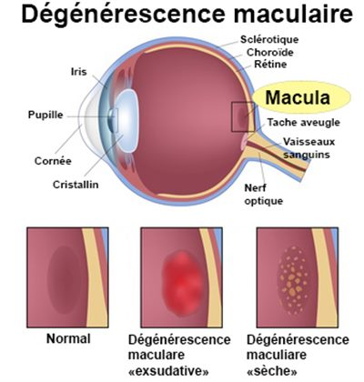
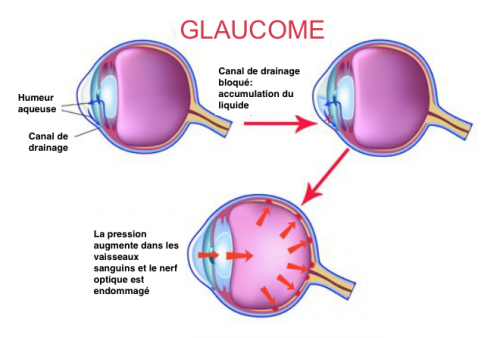
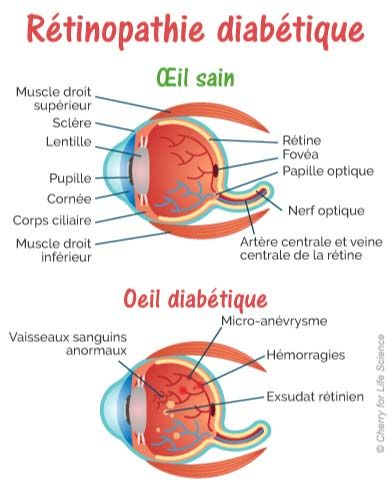

Que-ce que la malvoyance ?
La malvoyance est une déficience visuel. Les personnes atteintes de malvoyance non pas perdu totalement la vue.
Les déficiences visuelles peuvent être de différents niveaux : la malvoyance concerne les déficiences visuelles modérées ou graves qui diffèrent de la cécité clinique qui est une perte totale de la vision.
Quelles sont les maladies responsables de la malvoyance ?
Chez l'adulte, les pathologies principales responsables de déficience visuelle sont :
La DMLA (Dégénérescence Maculaire Liée à l'Age), est la première cause de handicap visuel chez les personnes de plus de 50 ans.

Elle prive le patient du centre de son champ de vision perturbant ainsi fortement son quotidien : lire, écrire, conduire... . Pour la forme la plus courante, la forme "sèche", l'apparition des symptômes signifie que la maladie est déjà bien installée..., d'où l'importance d'un contrôle médical régulier chez un ophtalmologiste.
Le glaucome qui, non traité, peut aboutir à la cécité. Cette pathologie est insidieuse car les symptômes peuvent apparaître après 20 ans de maladie non dépistée et non prise en charge. Le champ visuel se réduit dû à une atteinte du nerf optique suite à une augmentation de la pression du globe oculaire. C'est à partir de l'âge de 40 ans que vous devez faire contrôler la pression de vos yeux chez un ophtalmologiste.

La rétinopathie diabétique est aujourd’hui mieux prévenue grâce au dépistage mais elle constitue une cause de déficience visuelle, le champ de vision s'altère. Le diabète est l'unique responsable. Une perspective inquiétante réside dans le fait qu'en 2020, 20% de la population française serait obèse, l'obésité est un des facteurs de risque de développement du diabète.

La myopie forte et ses conséquences telles que le décollement de rétine ou la maculopathie, peuvent conduire à un état de malvoyance.
La rétinite pigmentaire, les maladies dégénératives, les traumatismes oculaires et les cérébro-lésions sont aussi responsables d’état de malvoyance.
Chez l'enfant, les pathologies qui atteignent le nerf optique sont largement responsables de déficiences visuelles.
Les autres causes de malvoyance chez l'enfant sont la rétinite pigmentaire, le glaucome congénital…

Combien de personnes sont concernées par la malvoyance ?
En France, l'INSEE estime à 3,1 millions le nombre de déficients visuels, de tout âge.
La déficience visuelle touche plus particulièrement les personnes de plus de 50 ans : DMLA, glaucome, rétinopathie diabétique, …
Les maladies d'origine génétique telle que la rétinite pigmentaire concernerait 35.000 personnes en France.
Les progrès de la science permettent un allongement de notre espérance de vie, ainsi la population vieillit. Ce qui entraine une augmentation des déficiences visuelles dans le monde et constitue un véritable problème de santé publique.
En effet, aujourd’hui 22% de la population française a plus de 60 ans. Dans 25 ans, elle dépassera 30%.
Si l’on s’intéresse à la Dégénérescence Maculaire Liée à l’ age (DMLA), il y aurait en France 1,5 million de personnes touchées, mais toutes les DMLA ne sont pas cécitantes. La DMLA qui conduit à la perte d’autonomie, représenterait 350.000 à 450.000 personnes. Ces personnes sont susceptibles d’être réadaptées en basse vision, sauf si une autre pathologie empêche cette réadaptation.
Le glaucome concernerait plus d'un million de personnes en France. Parmi elles, 700.000 sont traitées mais 400.000 personnes ne seraient pas diagnostiquées(3) et ignorent qu'elles sont atteintes.
Le diabète est à l'origine de la rétinopathie diabétique. Aujourd'hui 30 à 40% des diabétiques(4) sont atteints par cette maladie oculaire qui conduit à la cécité si elle n'est pas traitée.

Existe-il des moyens de prévention contre la malvoyance ?
Certaines pathologies peuvent être prévenues par un dépistage précoce, ceci est essentiel pour limiter les complications et préserver au maximum la vision du patient. Faites contrôler la santé de vos yeux tous les 2 ans minimum.
Ensuite, les bonnes pratiques résident dans la protection des organes qui constituent l'œil, ainsi il est important de protéger ses yeux des effets nocifs du soleil comme les UV et ce dès le plus jeune âge.
Certains facteurs de risque comme le tabac peuvent être évités.
Plusieurs études démontrent que le tabac augmente considérablement le risque de développer une DMLA.
Enfin, adoptez une alimentation équilibrée permet de limiter l'obésité et donc de réduire le risque de développer un diabète responsable de la rétinopathie diabétique.
A noter que certaines de ces pathologies sont héréditaires et donc ne peuvent pas être prévenues.

Existe-t-il des traitements ?
Il y a eu de gros progrès dans le traitement des pathologies cécitantes : les innovations médicamenteuses, chirurgicales et de réadaptation sont continuelles.
Aujourd'hui, les traitements permettent pour la plupart de limiter l'évolution de la maladie, mais pas le recouvrement de l'altération de vision, d'où l'importance des dépistages et des prises en charge précoces.
Un mode de traitement qui se développe est l’injection intra vitréenne (IVT), en particulier pour la DMLA mais aussi pour d'autres maladies comme la rétinopathie diabétique.
De quoi s'agit-il ?
Pour les médicaments ou les collyres, les principes actifs arrivent dans l’œil par transmission par le sang, or l'intérieur de l’œil n’est pas vascularisé, le plus efficace est donc d'introduire le produit directement dans l’œil, par une piqûre (IVT). C’est un mode d’injection qui peut impressionner mais qui est très prometteur.

Qui prend en charge les personnes atteintes de malvoyance ?
La prise en charge des personnes atteintes de basse vision est globale et regroupe de nombreux professionnels : médicaux, paramédicaux, mais aussi du social.
Le parcours de soins est initié par l’ophtalmologiste qui oriente ensuite le patient vers l'orthoptiste, l'opticien, l’ergothérapeute, le psychologue, qui ont tous un rôle essentiel.
Les centres pluridisciplinaires bénéficient en plus du service de psychomotriciens et d'instructeurs en locomotion.
La rééducation et la réadaptation fonctionnelle représentent des aides précieuses pour les patients. Cette réadaptation est assurée par un orthoptiste. Par des exercices visuels quotidiens, le patient apprend à exploiter différemment son champ de vision.
Les aides visuelles : loupes, télé-agrandisseurs... sont spécifiques à chacun et à l'activité pratiquée, elles nécessitent un accompagnement particulier par l'orthoptiste et l'opticien spécialisé en basse vision.

Comment se déroule la prise en charge psychologique pour les malvoyants ?
La Psychologie est un aspect essentiel.
Pour que la rééducation basse vision soit efficace, il faut comprendre ce que vit le patient du point de vue global et humain.
Le malvoyant doit accepter de perdre une partie de sa vision, certains psychologues et psychiatres parlent même de " phase de deuil ".
L’entourage proche doit soutenir le patient dès le début, mais il doit ensuite être moins présent pour permettre à la personne concernée de rebondir et de retrouver une certaine autonomie.